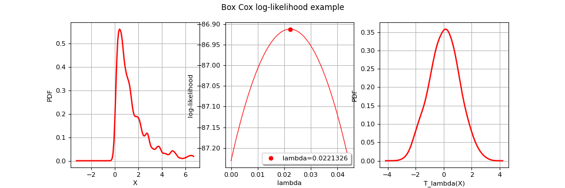

BoxCoxFactory¶
(Source code, png)
{kind=link}

- class BoxCoxFactory(*args)¶
BoxCox transformation estimator.
Notes
The class
BoxCoxFactoryenables to build a Box Cox transformation from data.The Box Cox transformation
 maps a sample into a new sample following a normal distribution with independent components. That sample may be the realization of a process as well as the realization of a distribution.
maps a sample into a new sample following a normal distribution with independent components. That sample may be the realization of a process as well as the realization of a distribution.In the multivariate case, we proceed component by component:
 which writes:
which writes:![h_{\lambda_i, \alpha_i}(x) =
\left\{
\begin{array}{ll}
\dfrac{(x+\alpha_i)^\lambda-1}{\lambda_i} & \lambda_i \neq 0 \\
\log(x+\alpha_i) & \lambda_i = 0
\end{array}
\right.]()
for all
 .
.BoxCox transformation could alse be performed in the case of the estimation of a general linear model through
GeneralLinearModelAlgorithm. The objective is to estimate the most likely surrogate model (general linear model) which links input data and
and  .
.  are to be calibrated such as maximizing the general linear model’s likelihood function. In that context, a
are to be calibrated such as maximizing the general linear model’s likelihood function. In that context, a CovarianceModeland aBasishave to be fixedMethods
build(*args)Estimate the Box Cox transformation.
buildWithGLM(*args)Estimate the Box Cox transformation with general linear model.
buildWithGraph(*args)Estimate the Box Cox transformation with graph output.
buildWithLM(*args)Estimate the Box Cox transformation with linear model.
Accessor to the object's name.
getId()Accessor to the object's id.
getName()Accessor to the object's name.
Accessor to the solver.
Accessor to the object's shadowed id.
Accessor to the object's visibility state.
hasName()Test if the object is named.
Test if the object has a distinguishable name.
setName(name)Accessor to the object's name.
setOptimizationAlgorithm(solver)Accessor to the solver.
setShadowedId(id)Accessor to the object's shadowed id.
setVisibility(visible)Accessor to the object's visibility state.
- __init__(*args)¶
- build(*args)¶
Estimate the Box Cox transformation.
- Parameters:
- Returns:
- transform
BoxCoxTransform The estimated Box Cox transformation.
- transform
Notes
We describe the estimation in the univariate case, in the case of no surrogate model estimate. Only the parameter
 is estimated. To clarify the notations, we omit the mention of
is estimated. To clarify the notations, we omit the mention of  in
in  .
.We note
 a sample of
a sample of  . We suppose that
. We suppose that ![h_\lambda(X) \sim \cN(\beta , \sigma^2 )]() .
.The parameters
 are estimated by the maximum likelihood estimators. We note
are estimated by the maximum likelihood estimators. We note  and
and  respectively the cumulative distribution function and the density probability function of the
respectively the cumulative distribution function and the density probability function of the  distribution.
distribution.We have :
![\begin{array}{lcl}
\forall v \geq 0, \, \Prob{ X \leq v } & = & \Prob{ h_\lambda(X) \leq h_\lambda(v) } \\
& = & \Phi_{\beta, \sigma} \left(h_\lambda(v)\right)
\end{array}]()
from which we derive the density probability function p of
:![\begin{array}{lcl}
p(v) & = & h_\lambda'(v)\phi_{\beta, \sigma}(v) = v^{\lambda - 1}\phi_{\beta, \sigma}(v)
\end{array}]()
which enables to write the likelihood of the values
:![\begin{array}{lcl}
L(\beta,\sigma,\lambda)
& = &
\underbrace{ \frac{1}{(2\pi)^{N/2}}
\times
\frac{1}{(\sigma^2)^{N/2}}
\times
\exp\left[
-\frac{1}{2\sigma^2}
\sum_{k=0}^{N-1}
\left(
h_\lambda(x_k)-\beta
\right)^2
\right]
}_{\Psi(\beta, \sigma)}
\times
\prod_{k=0}^{N-1} x_k^{\lambda - 1}
\end{array}]()
We notice that for each fixed
, the likelihood equation is proportional to the likelihood equation which estimates  .
.Thus, the maximum likelihood estimators for
 for a given are :
for a given are :![\begin{array}{lcl}
\hat{\beta}(\lambda) & = & \frac{1}{N} \sum_{k=0}^{N-1} h_{\lambda}(x_k) \\
\hat{\sigma}^2(\lambda) & = & \frac{1}{N} \sum_{k=0}^{N-1} (h_{\lambda}(x_k) - \beta(\lambda))^2
\end{array}]()
Substituting these expressions in the likelihood equation and taking the
 likelihood leads to:
likelihood leads to:![\begin{array}{lcl}
\ell(\lambda) = \log L( \hat{\beta}(\lambda), \hat{\sigma}(\lambda),\lambda ) & = & C -
\frac{N}{2}
\log\left[\hat{\sigma}^2(\lambda)\right]
\;+\;
\left(\lambda - 1 \right) \sum_{k=0}^{N-1} \log(x_i)\,,%\qquad mbox{where :math:`C` is a constant.}
\end{array}]()
The parameter
 is the one maximising
is the one maximising  .
.In the case of surrogate model estimate, we note
the input sample of ,  the input sample of
the input sample of  .
We suppose the general linear model link
.
We suppose the general linear model link ![h_\lambda(Y) = \vect{F}^t(\vect{x}) \vect{\beta} + \vect{Z}]() with
with  :
:![\mat{F}(\vect{x}) = \left(
\begin{array}{lcl}
\vect{f}_1(\vect{x}_1) & \dots & \vect{f}_M(\vect{x}_1) \\
\dots & \dots & \\
\vect{f}_1(\vect{x}_n) & \dots & \vect{f}_M(\vect{x}_n)
\end{array}
\right)]()
 is a functional basis with
is a functional basis with  for all i,
for all i,  are the coefficients of the linear combination and
are the coefficients of the linear combination and  is a zero-mean gaussian process with a stationary covariance function
is a zero-mean gaussian process with a stationary covariance function  Thus implies that
Thus implies that ![h_\lambda(Y) \sim \cN(\vect{F}^t(\vect{x}) \vect{\beta}, C_{\vect{\sigma}, \vect{\theta}})]() .
.The likelihood function to be maximized writes as follows:
![\begin{array}{lcl}
\ell_{glm}(\lambda) = \log L(\lambda ) & = & C - \log\left( |C^{\lambda}_{\vect{\sigma}, \vect{\theta}} | \right)
\;-\;
\left( h_\lambda(Y) - \vect{F}^t(\vect{x}) \vect{\beta} \right) {C^{\lambda}_{\vect{\sigma}, \vect{\theta}}}^{-1}
\left( h_\lambda(Y) - \vect{F}^t(\vect{x}) \vect{\beta} \right)^t
\end{array}]()
where
 is the matrix resulted from the discretization of the covariance model over .
The parameter is the one maximising
is the matrix resulted from the discretization of the covariance model over .
The parameter is the one maximising  .
.Examples
Estimate the Box Cox transformation from a sample:
>>> import openturns as ot >>> sample = ot.Exponential(2).getSample(10) >>> factory = ot.BoxCoxFactory() >>> transform = factory.build(sample) >>> estimatedLambda = transform.getLambda()
Estimate the Box Cox transformation from a field:
>>> indices = [10, 5] >>> mesher = ot.IntervalMesher(indices) >>> interval = ot.Interval([0.0, 0.0], [2.0, 1.0]) >>> mesh = mesher.build(interval) >>> amplitude = [1.0] >>> scale = [0.2, 0.2] >>> covModel = ot.ExponentialModel(scale, amplitude) >>> Xproc = ot.GaussianProcess(covModel, mesh) >>> g = ot.SymbolicFunction(['x1'], ['exp(x1)']) >>> dynTransform = ot.ValueFunction(g, mesh) >>> XtProcess = ot.CompositeProcess(dynTransform, Xproc)
>>> field = XtProcess.getRealization() >>> transform = ot.BoxCoxFactory().build(field)
- buildWithGLM(*args)¶
Estimate the Box Cox transformation with general linear model.
Refer to
build()for details.- Parameters:
- inputSample, outputSample
Sampleor 2d-array The input and output samples of a model evaluated apart.
- covarianceModel
CovarianceModel Covariance model. Should have input dimension equal to input sample’s dimension and dimension equal to output sample’s dimension. See note for some particular applications.
- basis
Basis, optional Functional basis to estimate the trend:
 .
If
.
If  , the same basis is used for each marginal output.
, the same basis is used for each marginal output.- shift
Point It ensures that when shifted, the data are all positive. By default the opposite of the min vector of the data is used if some data are negative.
- inputSample, outputSample
- Returns:
- transform
BoxCoxTransform The estimated Box Cox transformation.
- generalLinearModelResult
GeneralLinearModelResult The structure that contains results of general linear model algorithm.
- transform
Examples
Estimation of a general linear model:
>>> import openturns as ot >>> ot.RandomGenerator.SetSeed(0) >>> inputSample = ot.Uniform(-1.0, 1.0).getSample(20) >>> outputSample = ot.Sample(inputSample) >>> # Evaluation of y = ax + b (a: scale, b: translate) >>> outputSample = outputSample * [3] + [3.1] >>> # inverse transfo + small noise >>> def f(x): import math; return [math.exp(x[0])] >>> inv_transfo = ot.PythonFunction(1, 1, f) >>> outputSample = inv_transfo(outputSample) + ot.Normal(0, 1.0e-2).getSample(20) >>> # Estimation >>> basis = ot.LinearBasisFactory(1).build() >>> covarianceModel = ot.DiracCovarianceModel() >>> shift = [1.0e-1] >>> boxCox, result = ot.BoxCoxFactory().buildWithGLM(inputSample, outputSample, covarianceModel, basis, shift)
- buildWithGraph(*args)¶
Estimate the Box Cox transformation with graph output.
- Parameters:
- Returns:
- transform
BoxCoxTransform The estimated Box Cox transformation.
- graph
Graph The graph plots the evolution of the likelihood with respect to the value of
for each component i.
It enables to graphically detect the optimal values.
- transform
- buildWithLM(*args)¶
Estimate the Box Cox transformation with linear model.
Refer to
build()for details.- Parameters:
- inputSample, outputSample
Sampleor 2d-array The input and output samples of a model evaluated apart.
- covarianceModel
CovarianceModel Covariance model. Should have input dimension equal to input sample’s dimension and dimension equal to output sample’s dimension. See note for some particular applications.
- basis
Basis, optional Functional basis to estimate the trend:
.
If , the same basis is used for each marginal output.- shift
Point It ensures that when shifted, the data are all positive. By default the opposite of the min vector of the data is used if some data are negative.
- inputSample, outputSample
- Returns:
- transform
BoxCoxTransform The estimated Box Cox transformation.
- linearModelResult
LinearModelResult The structure that contains results of linear model algorithm.
- transform
Examples
Estimation of a linear model:
>>> import openturns as ot >>> ot.RandomGenerator.SetSeed(0) >>> x = ot.Uniform(-1.0, 1.0).getSample(20) >>> y = ot.Sample(x) >>> # Evaluation of y = ax + b (a: scale, b: translate) >>> y = y * [3] + [3.1] >>> # inverse transformation >>> inv_transformation = ot.SymbolicFunction('x', 'exp(x)') >>> y = inv_transformation(y) + ot.Normal(0, 1.0e-4).getSample(20) >>> # Estimation >>> shift = [1.0e-1] >>> boxCox, result = ot.BoxCoxFactory().buildWithLM(x, y, shift)
- getClassName()¶
Accessor to the object’s name.
- Returns:
- class_namestr
The object class name (object.__class__.__name__).
- getId()¶
Accessor to the object’s id.
- Returns:
- idint
Internal unique identifier.
- getName()¶
Accessor to the object’s name.
- Returns:
- namestr
The name of the object.
- getOptimizationAlgorithm()¶
Accessor to the solver.
- Returns:
- solver
OptimizationAlgorithm The solver used for numerical optimization.
- solver
- getShadowedId()¶
Accessor to the object’s shadowed id.
- Returns:
- idint
Internal unique identifier.
- getVisibility()¶
Accessor to the object’s visibility state.
- Returns:
- visiblebool
Visibility flag.
- hasName()¶
Test if the object is named.
- Returns:
- hasNamebool
True if the name is not empty.
- hasVisibleName()¶
Test if the object has a distinguishable name.
- Returns:
- hasVisibleNamebool
True if the name is not empty and not the default one.
- setName(name)¶
Accessor to the object’s name.
- Parameters:
- namestr
The name of the object.
- setOptimizationAlgorithm(solver)¶
Accessor to the solver.
- Parameters:
- solver
OptimizationAlgorithm The solver used for numerical optimization.
- solver
- setShadowedId(id)¶
Accessor to the object’s shadowed id.
- Parameters:
- idint
Internal unique identifier.
- setVisibility(visible)¶
Accessor to the object’s visibility state.
- Parameters:
- visiblebool
Visibility flag.